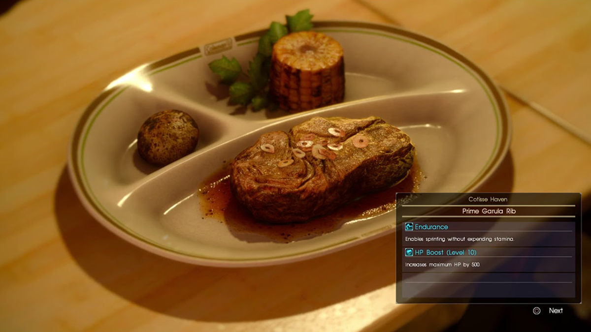

Home
Prime Garula Rib

Description:
“Say, Ignis. How come you like cookin’ so much?” “I find the true joy of
cooking on the faces of those for whom I cook.”
Ingredients - Roast:
- 2-3 lbs. Eye of Round Roast
- 1 Tbsp. Ground Coffee Beans
- 1 Tbsp. Brown Sugar
-
2 tsp. Diamond Crystal
or
1 tsp. Morton Kosher Salt
- 1 tsp. Ground Black Peppercorn
- 1/2 tsp. Ras el Hanout
Ingredients - Sauce:
- 8 oz. Crème Fraiche (1 cup)
- 4 oz. Grated Peeled Fresh Horseradish (1/2 cup)
- 1 Tbsp White Wine Vinegar
-
2 tsp Diamond Crystal
or
1 tsp Morton Kosher Salt
- 1 tsp Ground Black Peppercorns
- ¼ tsp Cayenne Pepper
Steps:
-
1. The morning of the dinner, prepare the beef. Combine coffee, sugar,
salt, pepper, and ras el hanout in a bowl. Rub the beef with olive oil
or spray with cooking spray. Place on a rack set in a large roasting
pan. Pat all over with the coffee mixture and refrigerate, uncovered.
-
2. Combine all the sauce ingredients in a bowl and refrigerate, covered.
-
3. Preheat oven to 450 degrees. Pour some water in the pan so the
drippings don’t burn and roast the meat for 30 minutes. Reduce heat to
350 degrees and continue roasting until center of roast registers 130
degrees on an instant-read thermometer, about 1 hour more.
-
4. Carve thinly and serve immediately with a substantial red wine such
as Cabernet Sauvignon or Barolo, a simple salad tossed with olive oil
and vinegar, and the horseradish cream sauce on the side for dipping.